Histoire et éducation à la citoyenneté
11 / 12 réalité sociales
L'expansion du monde industriel
1850 à 1914 · L'impérialisme et la colonisation
- acculturation
- colonisation
- discrimination
- impérialisme
- métropole
- nationalisme

Mise en contexte
Les besoins liés à l'industrialisation et à la croissance économique entraînent les puissances industrielles dans une course pour la possession de colonies au cours de la seconde moitié du 19e siècle. Les continents asiatique et africain seront presque entièrement partagés entre quelques États européens. La colonisation a des conséquences importantes sur le développement économique et social des territoires dominés.
Concepts à l'étude
- Acculturation : le fait d'adopter plusieurs aspects d'une culture étrangère au détriment de sa propre culture.
- Colonisation : l'occupation et l'exploitation d'un territoire par un État étranger, qui y impose son autorité.
- Discrimination : le fait de traiter une personne ou un groupe moins bien que les autres à cause de ce qu'ils sont.
- Impérialisme : une politique qui vise l'expansion d'un pays par la domination d'un territoire étranger. Un pays soumet un territoire par la force et exploite sa population et ses ressources.
- Métropole : l'État qui possède et administre des colonies.
- Nationalisme : l'attachement à une nation, qui peut mener un peuple à réclamer son indépendance ou pousser un État à vouloir dominer les autres. Un septième mot revient sans cesse dans cette réalité sociale. L'assimilation est le fait, pour un pays colonisateur, de chercher à intégrer un groupe dans sa population en lui enlevant son caractère distinctif, c'est-à-dire sa culture. L'acculturation en est la conséquence.
L'Afrique avant la colonisation
Avant d'entrer dans ce chapitre, il importe de rappeler que plusieurs nations habitent et peuplent l'Afrique. Il s'agit du berceau de l'humanité et l'être humain s'y trouve depuis plusieurs dizaines de milliers d'années. Des empires y ont existé, d'autres y ont connu leur chute. Le commerce y est florissant et de nombreux échanges s'y font. Néanmoins, ce n'est pas l'image qu'en ont donnée les colonisateurs européens.
Quelques repères. L'empire du Mali domine l'Afrique de l'Ouest aux 13e et 14e siècles, et sa ville de Tombouctou abrite des écoles et des bibliothèques réputées. Le royaume du Bénin, le royaume ashanti et le califat de Sokoto occupent la région aux siècles suivants. Le royaume d'Éthiopie, chrétien depuis le 4e siècle, traverse toute la période sans être conquis. Le royaume du Kongo, lui, échange avec le Portugal dès 1483.
Situer dans le temps
Le déclencheur : l'indépendance de l'Amérique latine
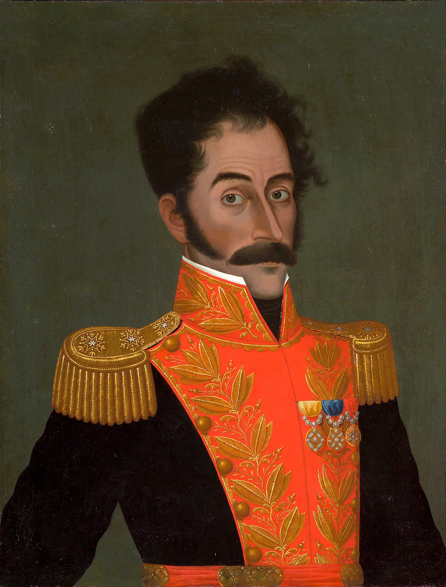
Source
José Gil de Castro (Lima, 1785 - Lima, 1837) – painter (Peruvian) Born in Lima. Died in Lima. Details on Google Art Project, José Gil de Castro - Simón Bolívar - Google Art Project, Wikimedia Commons. Licence : Domaine public.L'indépendance des États-Unis d'Amérique a profondément influencé les 18e et 19e siècles. En effet, cet événement a permis la diffusion d'idées nouvelles, comme l'autodétermination des peuples et les droits fondamentaux, qui ont trouvé un écho puissant dans les colonies d'Amérique latine, où les tensions sociales et économiques sont présentes.
Plusieurs mouvements d'indépendance se sont alors embrasés presque simultanément. En Amérique du Sud espagnole, des figures comme Simón Bolívar et José de San Martín ont mené des campagnes militaires de grande envergure, en libérant successivement le Venezuela, la Colombie, l'Équateur, le Pérou et le Río de la Plata entre 1810 et 1825. En Amérique centrale et au Mexique, Miguel Hidalgo lança le soulèvement mexicain dès 1810, couronné par l'indépendance en 1821. Le Brésil, quant à lui, suivit une voie plus singulière : la famille royale portugaise, réfugiée à Rio de Janeiro depuis 1808, consentit à une libération pacifique en 1822. Les métropoles européennes perdent donc des accès privilégiés aux ressources naturelles de leurs colonies, ce qui les amène à chercher de nouveaux territoires et de nouvelles richesses à exploiter. C'est là que commence l'histoire de ce chapitre.
L'exploration du continent africain
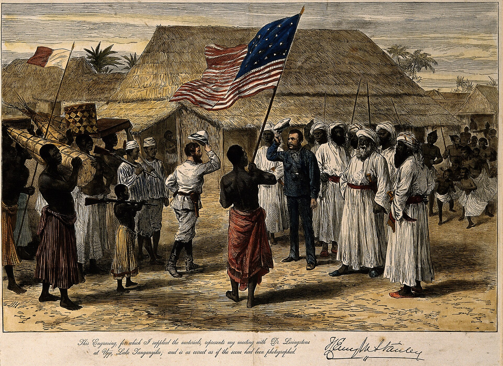
Source
Auteur inconnu, Henry Morton Stanley meeting David Livingstone at Ujiji, in Wellcome V0006855, Wikimedia Commons. Licence : Creative Commons BY 4.0.Les expéditions visant l'exploration du continent africain se multiplient au 19e siècle. Des explorateurs cartographient progressivement l'Afrique. Financés par les métropoles européennes, ceux-ci sont à la recherche de richesses et de voies de circulation naturelles du continent, comme les fleuves et les rivières. L'objectif est de coloniser progressivement le territoire afin de s'approprier les matières premières, dont les industries européennes ont tant besoin.
En effet, l'industrialisation de l'Angleterre, puis de la France, de l'Allemagne et des États-Unis fait pression sur la demande en ressources naturelles. Les États entrent alors en compétition afin de mettre la main sur celles-ci : zinc, plomb, fer, caoutchouc, coton et bien d'autres.
Source : Service national du RÉCIT, domaine de l'univers social
David Livingstone
Pour le compte de l'Angleterre, David Livingstone part pour l'Afrique en 1840. Il a entrepris de nombreux voyages et fut le premier Européen à traverser l'Afrique d'est en ouest. La durée de cette traversée fut de 4 ans. Il a lutté, tout au long de ses voyages d'exploration, pour mettre fin à l'esclavage, toujours présent sur le continent africain.
Henry Morton Stanley
Ce voyageur britannique a été envoyé comme journaliste en Turquie, en Abyssinie et en Espagne, avant de se rendre en Afrique. En 1870, on l'a envoyé à la recherche de David Livingstone, qu'il a d'ailleurs retrouvé sur les rives du Tanganyika. Après son retour en Angleterre, Stanley a reçu la mission de diriger d'autres expéditions en Afrique centrale. En 1874, il est reparti vers les lacs Victoria et Albert, il a également descendu le fleuve Congo, avant de retourner en Angleterre en 1878. En 1879, il est reparti avec le défi de développer le commerce le long du Congo.
Source : Alloprof
La création d'empires coloniaux
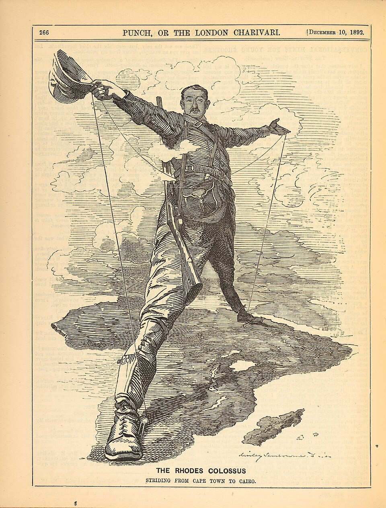
Source
Edward Linley Sambourne, Rhodes Colossus Punch 1892, Wikimedia Commons. Licence : Domaine public.La colonisation de l'Afrique est également motivée par un désir impérialiste de plusieurs États européens. Ils veulent étendre leur puissance et leur influence sur tous les continents et toutes les régions du globe. Chacun des pays européens souhaite dominer l'autre et posséder tous les territoires non revendiqués. Ils ne considèrent aucunement les populations locales qui y habitent depuis des millénaires. Parmi les objets de désir, il y a évidemment l'accès aux voies commerciales et aux ressources naturelles. Néanmoins, les États européens souhaitent aussi contrôler certains lieux stratégiques afin d'avoir des avantages marqués sur les autres États.
Impérialisme Politique qui vise l'expansion d'un pays par la domination d'un territoire étranger, dont il exploite la population et les ressources.
Colonisation Occupation et exploitation d'un territoire par un État étranger, qui y impose son autorité et son administration.
Les moteurs de la course
La conférence de Berlin
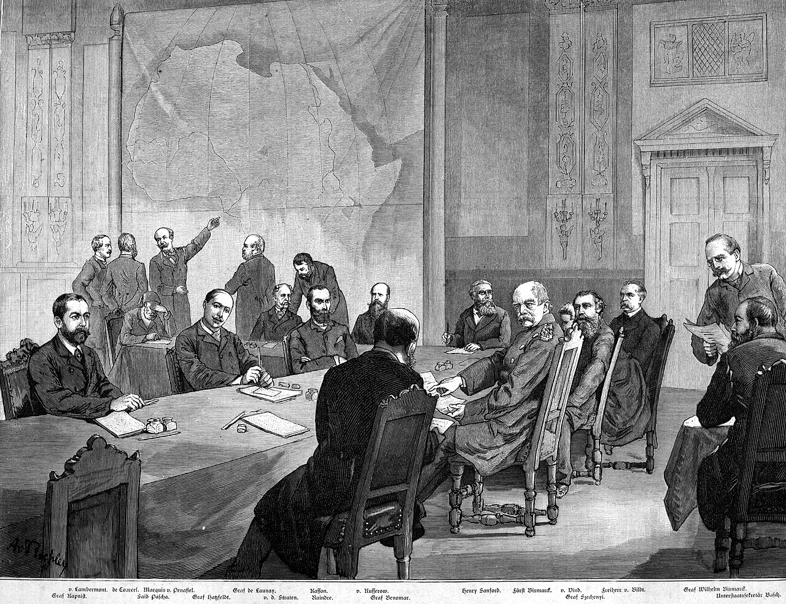
Source
Adalbert von Roessler, Kongokonferenz, Wikimedia Commons. Licence : Domaine public.La conférence de Berlin, qui s'est tenue de novembre 1884 à février 1885, fut organisée par le chancelier Bismarck, en Allemagne, afin d'établir les règles qui devaient présider à la colonisation de l'Afrique. En effet, depuis 1880 environ, le mouvement des explorations était devenu très politique.
Bismarck, qui avait engagé l'Allemagne, avec retard, dans le processus de partage de l'Afrique, entendait imposer des règles, en particulier le libre accès commercial aux grands bassins fluviaux et l'obligation d'occuper effectivement un territoire avant d'en revendiquer la possession. Ce dernier point eut pour conséquence la course au clocher, le scramble for Africa : Britanniques, Français, Allemands, Belges, Portugais et Italiens se lancèrent dans l'intérieur de l'Afrique, qui fut partagé par les Européens en moins de quinze ans, au prix de quelques guerres contre les royaumes africains.
Source : Encyclopédie Universalis
Les territoires africains sous domination extérieure
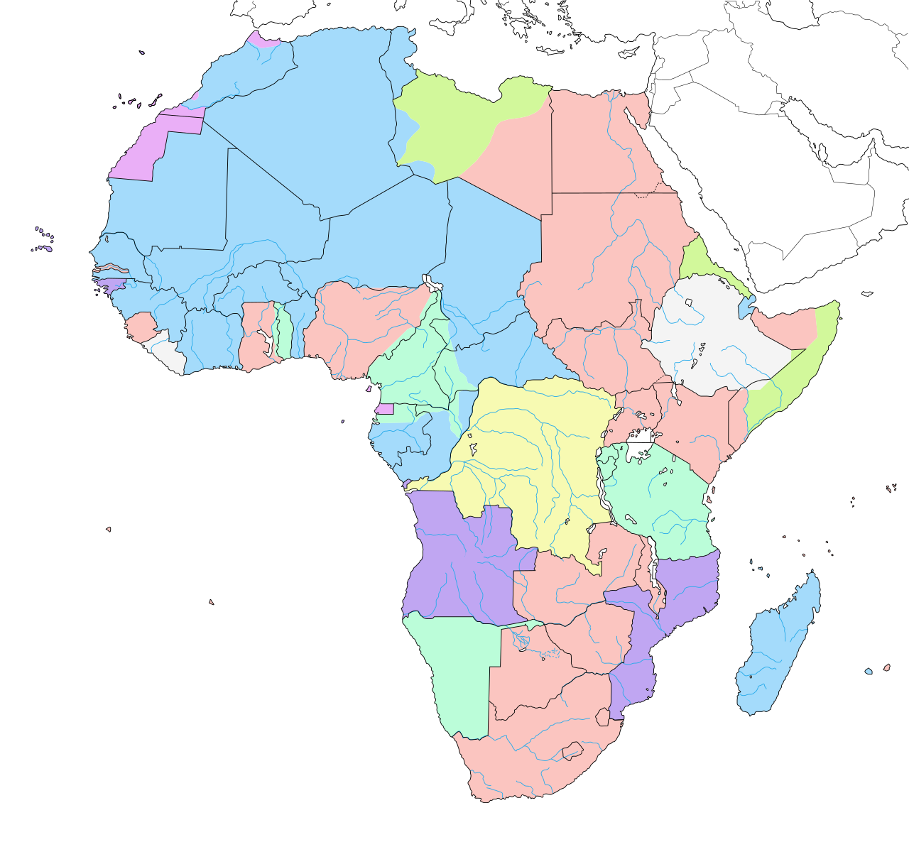
Source
Eric Gaba ( Sting - fr:Sting ), Colonial Africa 1913 map, Wikimedia Commons. Licence : Creative Commons BY-SA 3.0.Quelques années avant le début de la Première Guerre mondiale, le continent africain est presque entièrement dominé par les puissances européennes. Sept d'entre elles se partagent le territoire :
- la France;
- la Belgique;
- la Grande-Bretagne;
- l'Allemagne;
- l'Italie;
- le Portugal;
- l'Espagne.
Deux États seulement échappent à ce partage, l'Éthiopie et le Liberia. À l'ouverture de la conférence de Berlin, en 1884, les Européens occupaient environ le cinquième du continent, surtout des comptoirs côtiers. Trente ans plus tard, il ne leur échappe presque plus rien.
Justifier le colonialisme européen
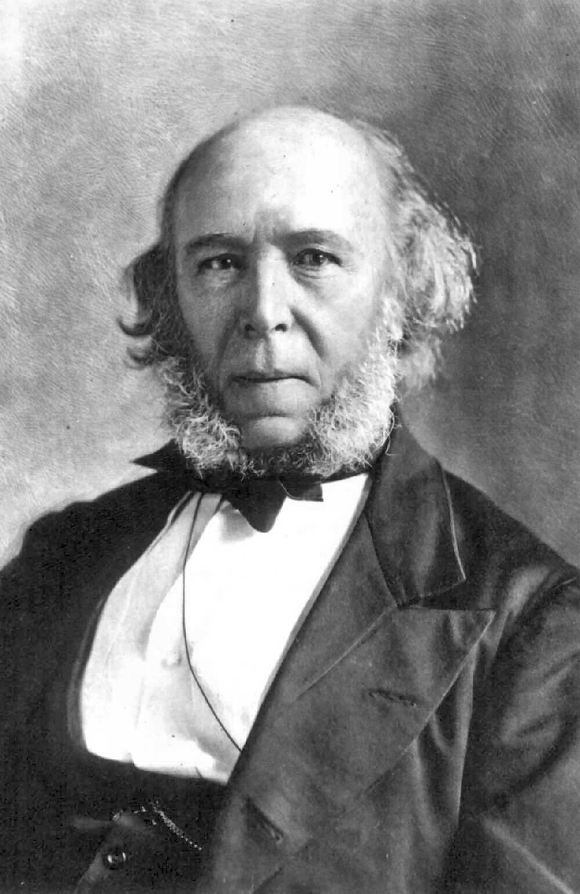
Source
Unknown, Herbert Spencer, Wikimedia Commons. Licence : Domaine public.Bien qu'on parle de darwinisme social, Herbert Spencer est en réalité antérieur à Darwin sur plusieurs idées évolutionnistes. C'est d'ailleurs lui, et non Charles Darwin, qui a forgé l'expression survival of the fittest en 1864. Il a ensuite appliqué ce principe à plusieurs domaines : la biologie, la psychologie, l'éthique et la sociologie. Sa thèse centrale est la suivante : les sociétés, comme les organismes vivants, évoluent d'un état simple vers un état complexe grâce à la compétition. Toute intervention de l'État perturberait selon lui ce mécanisme naturel, en permettant aux moins aptes de survivre et de se reproduire.
La mission civilisatrice
Pour les Européens, la colonisation de l'Afrique est justifiée par le fait que les Africains leur seraient inférieurs et qu'il faudrait les civiliser, en leur apportant les bienfaits de la civilisation occidentale. À l'époque, les notions de supériorité et d'infériorité des races sont omniprésentes. Cette croyance en la supériorité des Européens est notamment renforcée par le fait que l'Europe a connu une révolution industrielle. La civilisation européenne, avec ses nouveaux moyens de transport, sa culture et ses universités de prestige, est vue comme supérieure aux peuples africains. C'est pourquoi les Européens souhaitent imposer leur culture dans leurs nouvelles colonies africaines.
Source : Alloprof
L'assimilation et l'acculturation
Hormis la supériorité militaire, les Européens utilisent l'éducation afin d'assimiler les populations d'Afrique. Les populations africaines acceptent très mal la présence des envahisseurs européens. Même après plusieurs années, les Européens sont considérés comme des étrangers qui volent les ressources des Africains.
Pour faciliter le contrôle de la colonie, les métropoles tentent d'assimiler les habitants en leur imposant leur culture. Les pays colonisateurs construisent donc des écoles, dans lesquelles ils enseignent aux jeunes Africains la langue, la religion, les lois et l'histoire de leur métropole européenne. L'éducation devient alors un outil d'assimilation. La principale conséquence de cette situation est l'acculturation des Africains, c'est-à-dire qu'ils perdent tranquillement leur culture au profit de celle des Européens.
Assimilation Le fait, pour un pays colonisateur, de chercher à intégrer un groupe dans sa population en lui enlevant son caractère distinctif
Acculturation Le fait d'adopter plusieurs aspects d'une culture étrangère au détriment de sa propre culture
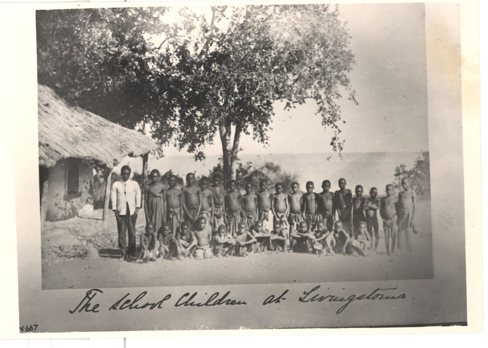
Source
Society of Malawi, Historical and Scientific, The school children of Livingstonia, Wikimedia Commons. Licence : Creative Commons BY-SA 4.0.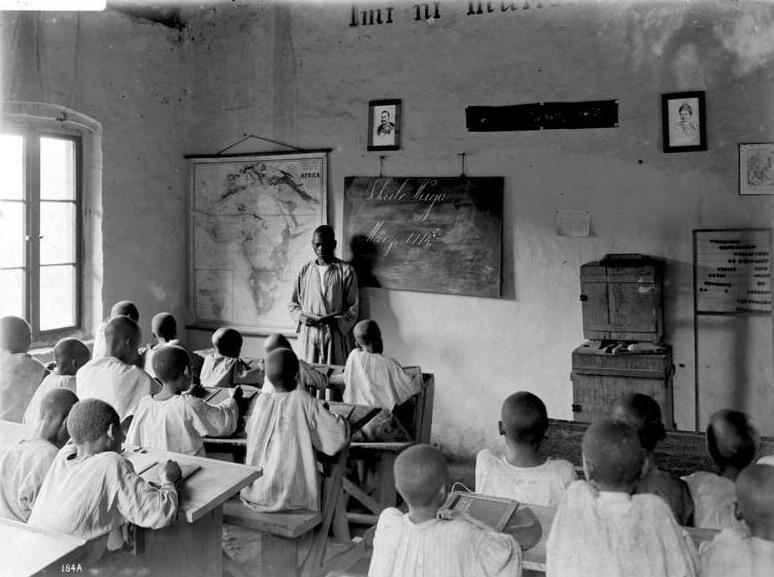
Source
Walther Dobbertin, Bundesarchiv Bild 105-DOA0184, Deutsch-Ostafrika, Wuga, Schule, Wikimedia Commons. Licence : CC BY-SA 3.0 de.Les conséquences du colonialisme
Le travail forcé
Dans les différentes colonies africaines, les puissances européennes exploitent les ressources naturelles que sont les métaux, le cacao et le caoutchouc. Pour ce faire, elles aménagent des mines, des plantations, des champs ainsi que des infrastructures de transport, comme des canaux et des voies ferrées. Ces infrastructures visent l'exportation des ressources naturelles vers l'Europe, là où se trouvent les manufactures.
Le canal de Suez en est le meilleur exemple. Creusé entre 1859 et 1869 à travers l'isthme qui sépare la Méditerranée de la mer Rouge, il raccourcit de plusieurs milliers de kilomètres la route entre l'Europe et l'Asie, puisque les navires n'ont plus à contourner l'Afrique. Le chantier emploie des dizaines de milliers d'Égyptiens, d'abord réquisitionnés par la corvée, jusqu'à ce que celle-ci soit abandonnée en 1864 et remplacée par des machines à draguer. Le canal est ouvert à la navigation le 17 novembre 1869. En 1875, l'Égypte, très endettée, vend ses parts de la compagnie au gouvernement britannique, et le Royaume-Uni occupe le pays en 1882 pour protéger la voie d'eau.
Ce sont les Africains qui exploitent ces ressources naturelles et qui construisent les infrastructures. En effet, les métropoles contraignent les populations africaines au travail, ce qui se rapproche de l'esclavage. Cette main-d'oeuvre, bon marché, subit alors des abus en tout genre : sévices corporels, coups de fouet et mutilations.
Le cas du Congo
La colonisation du Congo au 19e siècle est marquée par une exploitation brutale des ressources naturelles et une violence extrême à l'encontre de la population. En effet, le roi Léopold II de Belgique a pris possession du territoire à travers des manoeuvres diplomatiques et politiques qui ont abouti à la conférence de Berlin. Il a gouverné le Congo comme sa propriété privée, et non comme une colonie de la Belgique.
Au Congo, l'exploitation du caoutchouc est devenue le moteur principal de l'économie coloniale. La demande mondiale de caoutchouc, stimulée par l'invention du pneu, a créé une demande importante envers cette ressource. Un système de travail forcé a été mis en place pour maximiser la production. Les villageois étaient contraints de respecter des quotas irréalistes, sous peine de punitions sévères comme des mutilations, des coups de fouet et des sévices corporels envers les membres de leurs familles.
Le nombre de Congolais qui périrent pendant l'époque coloniale est très élevé. Les estimations les plus souvent citées font état d'une réduction de la population d'environ 50 pour cent, ce qui pourrait représenter une perte minimale de 10 millions de vies. Ce déclin est attribué à une combinaison de facteurs, notamment la violence des colonisateurs, la famine et les maladies.
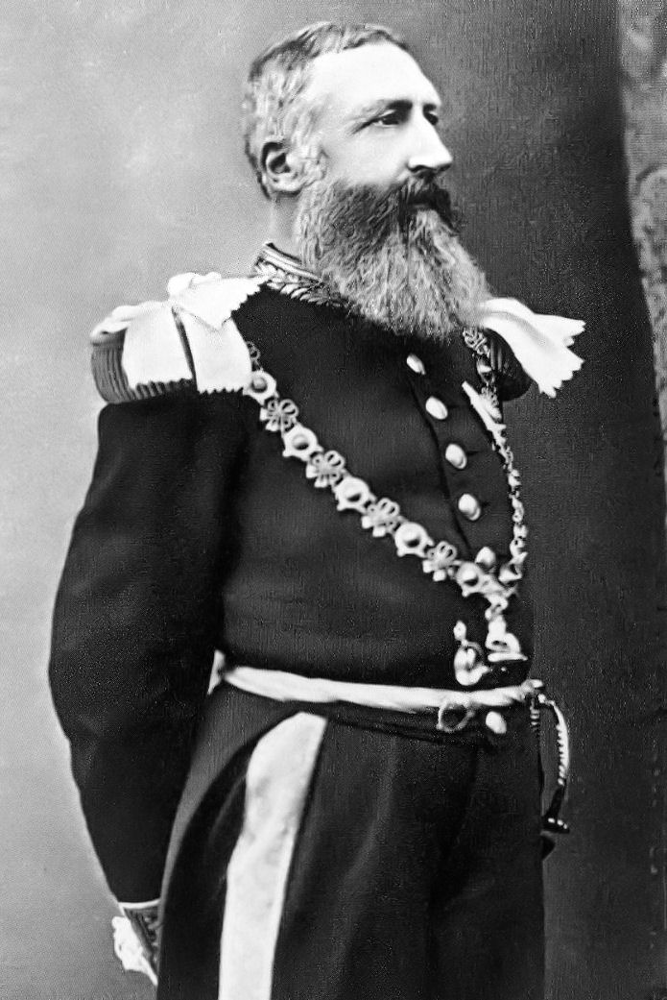
Source
London Stereoscopic and Photographic Company, Leopold ii garter knight, Wikimedia Commons. Licence : Domaine public.
Source
Edward Linley Sambourne, Punch congo rubber cartoon, Wikimedia Commons. Licence : Domaine public.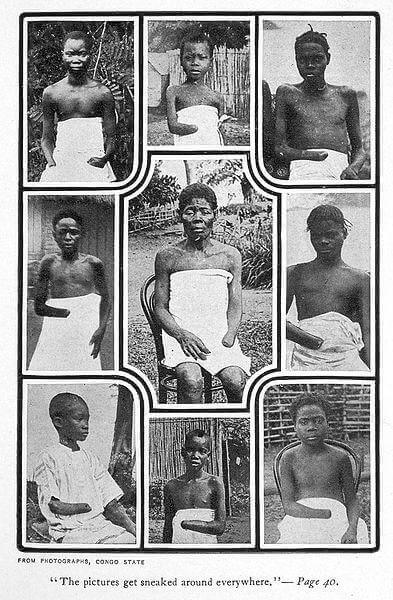
Source
Photographie publiée par Mark Twain, King Leopold's Soliloquy, Boston, The P. R. Warren Co, 1905, page 40, Service national du RÉCIT, univers social. Licence : Domaine public.Les frontières tracées après la conférence de Berlin
Dans les années qui suivent la conférence de Berlin, les États européens occupent le continent et fixent entre eux les limites de leurs possessions, par des traités signés deux à deux. Ces frontières sont tracées sans tenir compte des peuples qui vivent là, ce qui crée des tensions. Profitant de ces tensions, les Belges favorisent les Tutsis au détriment des Hutus dans la colonie du Ruanda-Urundi. La création de frontières qui ne respectent pas les populations locales, puis les avantages accordés par les Belges aux Tutsis, ont favorisé l'émergence de la crise contemporaine et du génocide de 1994 au Rwanda.
Collaborer
Certains Africains vont collaborer avec les colonisateurs. En échange de leur aide pour gérer la colonie et éviter les soulèvements, les Européens leur donnent des privilèges. Ces Africains occupent des postes administratifs importants et ont de meilleures conditions de vie. Les Britanniques vont donner de l'argent et des avantages à certains chefs pour acheter leur loyauté et servir leurs intérêts. S'ils refusent ces privilèges, ils devront faire du travail forcé et les colonisateurs trouveront d'autres Africains afin de tenir les postes importants.
S'opposer
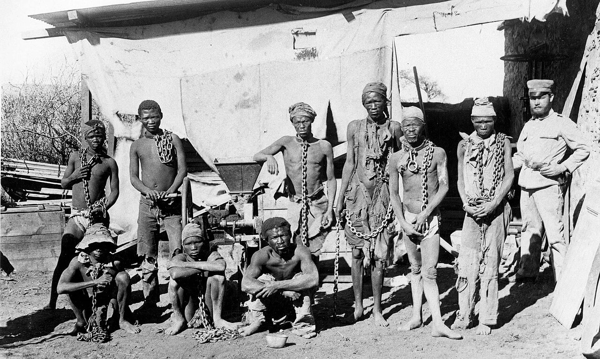
Source
Unknown author Unknown author, Herero and Nama prisoners, Wikimedia Commons. Licence : Domaine public.Dans certaines colonies, des révoltes surviennent. On s'oppose à la colonisation du territoire par les Européens. La puissance militaire des colonisateurs est cependant trop forte. Dans le Sud-Ouest africain allemand, la Namibie actuelle, les Héréros se sont soulevés contre les colonisateurs allemands en 1904. L'Allemagne envoie des soldats dans la colonie. La population héréro passe alors de 80 000 à 15 000 personnes en l'espace de dix ans.
La Première Guerre mondiale et les colonies
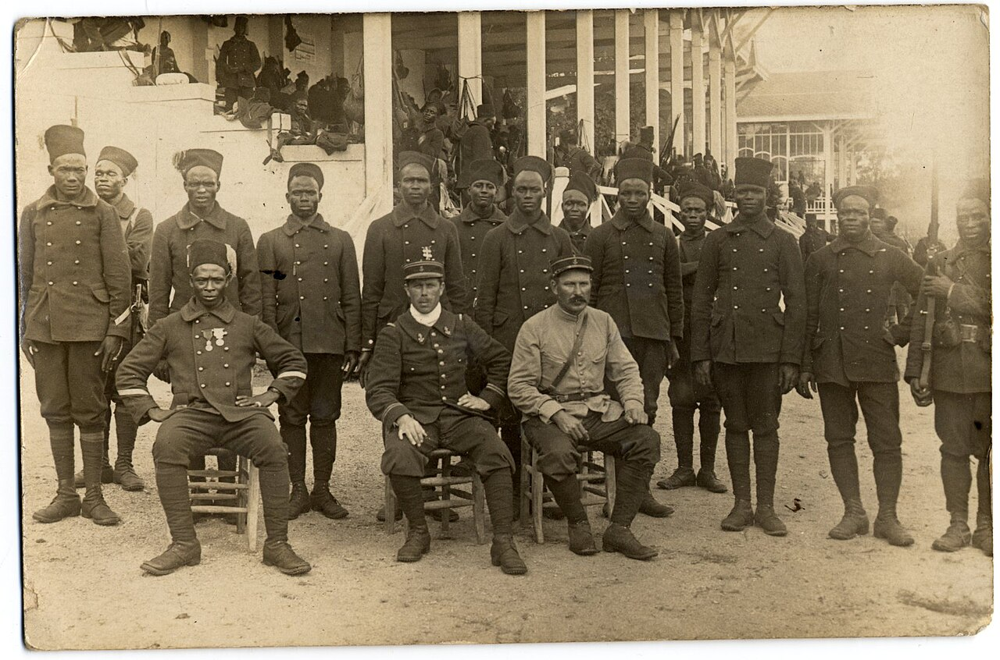
Source
Jacques Provot, Tirailleurs du 8e bataillon sénégalais du Maroc envoyés en France, 12 septembre 1914, Wikimedia Commons. Licence : Creative Commons BY-SA 3.0.L'Armée d'Afrique, pour la France, était l'un des plus importants contingents, principalement avec ses unités militaires venues d'Algérie, du Maroc et de Tunisie. Le recrutement concernait aussi l'Afrique noire. Les tirailleurs sénégalais en sont l'un des exemples les plus célèbres. Si les effectifs n'étaient en rien comparables à ceux engagés dans le conflit, leurs actions n'en demeuraient pas moins capitales. Ces hommes vaillants et courageux étaient souvent envoyés en première ligne. Ils ont participé à de nombreuses batailles historiques, comme celles de la Somme ou de Verdun. Les colonies étaient, en quelque sorte, des viviers à chair fraîche pour les tranchées.